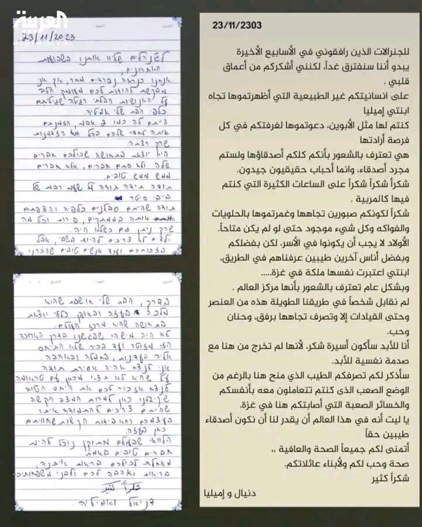
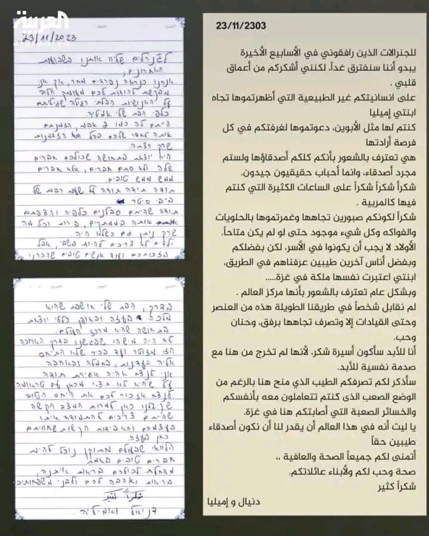

أهلًا وسهلًا بك
ستجد امامك لينك قناة تيليجرام به كل جديد عن فيديوهات المقاومة فان كنت ترغب بالمشاهدة ادخل ولا عليك
استمتع بالمشاهدة
الإنسان أسير الاحسان
لله در القسام، حتى لحظات تسليم أسرى عدوهم جعلوها مشاهد مؤثرة رقيقة الإحساس تترك في النفوس أثرًًا؛ فما سلم من الوقوع في أسر حبهم عدو ولا حبيب. وكأن هؤلاء قوم لا يدخلون في شيء إلا تزين بهم وازداد بهاءً وجمالًا ابتداءً من الصفر فما فوقه. فسلام من الله على أولئك الذين تراهم في السلم أرق الناس أفئدة وأعلاهم خلقًا؛ فإذا جاءت الخطوب كانوا رجالًا.
أحمد سيف
حسن التعامل مع الاسرى
كانت معاملة النَّبيِّ (ﷺ) للأسرى تحفُّها الرَّحمة، والعدل، والنظرة الدَّعوية؛ فقبل ببعضهم الفداء، وآخرون اشترط عليهم تعليم عشرة من أبناء المسلمين مقابل المنِّ عليهم (السيرة النبوية، علي محمد الصلابي، دار الأصالة، 2023، ج2، ص 10-15).
وحين رجع النبي (ﷺ) إلى المدينة المنورة، إثر انتصاره في معركة بدر، فَرَّق الأسرى بين أصحابه، وقال لهم: «استوصوا بهم خيراً»؛ وبهذه التَّوصيَة النَّبويَّة الكريمة، ظهر تحقيق قوله الله تعالى: ﴿وَيُطْعِمُونَ الطَّعَامَ عَلَى حُبِّهِ مِسْكِيناً وَيَتِيمًا وَأَسِيرًا ﴾ [الإنسان: 8].
فهذا أبو عزيز بن عُمَيْر أخو مُصعب بن عمير، يحدِّثنا عمَّا رأى، قال: كنتُ في الأسرى يوم بدرٍ، فقال رسول الله (ﷺ) : «استوصوا بالأُسارى خيراً»، وكنتُ في نفرٍ من الأنصار، فكانوا إذا قدَّموا غداءهم، وعشاءهم، أكلوا التَّمر، وأطعموني البُرّ؛ لوصيَّة رسول الله (ﷺ) [الطبراني في الصغير (401)، والطبري في تاريخه (2/460)، ومجمع الزوائد (6/86)].
وهذا أبو العاص بن الرَّبيع يحدِّثنا، قال: كنت في رَهْطٍ من الأنصار جزاهم الله خيراً، كنَّا إذا تعشَّينا، أو تغدَّينا، اثروني بالخُبْزِ، وأكلوا التَّمْرَ، والخبزُ معهم قليلٌ، والتَّمْرُ زادُهم، حتَّى إنَّ الرَّجل لتقع في يده كِسْرَةٌ فيدفعها إليَّ، وكان الوليد بن الوليد بن المغيرة يقول مثلَ ذلك، ويزيد: «وكانوا يحملوننا، ويمشون».
كان هذا الخُلُق الرَّحيم الَّذي وضع أساسه القرآن الكريم في ثنائه على المؤمنين، وذكَّر به النَّبيُّ (ﷺ) أصحابَه؛ فاتَّخذوه خُلقاً، وكان لهم طبيعةً، قد أثر في إسراع مجموعة مِنْ أشراف الأسرى، وأفاضلهم إلى الإسلام، فأسلم أبو عزيز عُقَيْبَ بدرٍ، بُعيْد وصول الأسرى إلى المدينة، وتنفيذ وصيَّة رسول الله (ﷺ)، وأسلم معه السَّائب بن عبيد بعد أن فدى نفسه، فقد سرت دعوة الإسلام إلى قلوبهم، وطهَّرت نفوسَهم، وعاد الأسرى إلى بلادِهم وأهليهم، يتحدَّثون عن محمَّدٍ (ﷺ)، ومكارم أخلاقه، وعن محبَّته، وسماحته، وعن دعوته، وما فيها من البِرِّ والتَّقوى، والإصلاح والخير (السيرة النبوية، علي محمد الصلابي، دار الأصالة، 2023، ج2، ص 14-19).
ومن مشاهد الهدي النبوي الكريم في التعامل مع الأسرى والإحسان إليهم، هو ما حدث حين أسر المسلمون ثُمامةَ بن أَثال الحنفيَّ سيِّد بني حنيفة، وهم لا يعرفونه، فقدموا به المدينة، وربطوه بساريةٍ من سواري المسجد، فخرَج إليه النَّبيُّ (ﷺ) فقال: «ماذا عندك يا ثُمامة؟!» فقال: عندي خيرٌ يا محمد! إن تقتلني، تقتل ذا دمٍ، وإن تُنعم؛ تُنعم على شاكرٍ، وإن كنت تريد المال؛ فسل منه ما شئت. فتركه حتَّى كان الغد، فقال: «ما عندك يا ثُمامة؟!» فقال: عندي ما قلت لك: إنْ تُنعم؛ تنعم على شاكرٍ.
فتركه حتَّى كان بعد الغد، فقال: «ما عندك يا ثُمامة؟!» فقال: عندي ما قلت لك. فقال: «أطلقوا ثُمامة» فانطلق إلى نخلٍ قريبٍ من المسجد، فاغتسل، ثمَّ دخل المسجد، فقال: أشهد أن لا إله إلا الله، وأشهد أنَّ محمَّداً رسولُ الله، يا محمد! والله! ما كان على الأرض وجهٌ أبغضَ إليَّ من وجهك، فقد أصبح وجهُك أحبَّ الوجوه إليَّ، والله! ما كان دينٌ أبغضَ إليَّ من دينك، فأصبح دينك أحبَّ الدِّين إليَّ، والله! ما كان بلـدٌ أبغضَ إليَّ من بلـدك، فأصبح بلدُك أحبَّ البـلاد إلـيَّ، وإنَّ خيلك أخذتني وأنا أريد العُمرة، فماذا ترى؟ فبشَّره رسولُ الله (ﷺ)، وأمره أن يعتمر. فلـمَّا قدم مكَّة؛ قال له قائل: صَبَوْتَ؟ قال: لا والله! ولكنِّي أسلمت مع محمَّدٍ رسول الله (ﷺ)، ولا والله لا يأتيكم من اليمامة حبَّةُ حنطةٍ حتَّى يأذن فيها النَّبيُّ (ﷺ) (السيرة النبوية، علي محمد الصلابي، دار الأصالة، 2023، ج2، ص 10-19).
وفي هذه القصة لفتة إسلامية رائعة، وصورةٌ نبوية إنسانية عظيمة، حول الأثر الجميل الذي تتركه المعاملة الطيبة في قلوب وعقول المغلوبين والمأسورين، فربما تقودهم للهداية، وتجعلهم هداةً مهتدين. ولم يختلف ذلك الأثر الحسن والجميل الذي تركه النبي (ﷺ) في قلب ثمامة عن الأثر الجميل والانطباع الحسن الذي تركه أبطال فلسطين في نفوس أسراهم الإسرائيليين، ونفوس الكثير من أبناء الإنسانية.
بل إن أحكام الشريعة الإسلامية المتعلقة بالتعامل مع الأسرى شملت إجازة النفقة عليهم وكسوتهم، حيث روى البخاري عن جابر بن عبدالله (رضي الله عنهما) قال: "لما كان يوم بدر، أتي بأسارى بدر، وأُتي بالعباس، ولم يكن عليه ثوب فنظر النبي (ﷺ) له قميصاً، فوجد قميص عبدالله بن أبي يقدر عليه، فكساه النبي (ﷺ) إياه"، وهذا في شأن الكسوة.
فلكم أن تتخيلوا أعظم الخلق وسيد الثقلين (ﷺ) يرجع عدة مرات تلبيةً لنداء الأسير بين يديه بدون أن يتأفف أو يتذمر، بل يجيبه بالحِلم المعهود عنه، ويسأل عن حاجته ويلبيها.
في الختام نقول:
إنَّ المعاملة الكريمة للأسرى في العهد النبوي، وفي العهود الإسلامية حتى لحظة مبادلة الأسرى في فلسطين، شاهدٌ على سُموِّ الإسلام الأخلاقيِّ والقيمي والروحي، حيث نال أعداءُ الإسلام من معاملة النبي الأعظم (ﷺ) والصَّحابة الكرام أعلى درجات المعاملة الطيبة، والخُلق الحسن؛ خُلُق الإيثار، وحفظ الكرامة، والصبر على الدعوة، والأمر بالمعروف، وعدم التعدي على الحُرمات، وإن ما شاهدناه من معاملة المقاومة الفلسطينية للأسرى الإسرائيليين والأمريكان، وغيرهم من أعدائهم في شهادات الأسرى، ووسائل إعلام العدو، ما هو إلا اِنعكاس حقيقي لقيم وتعاليم الإسلام السمحة، واقتداء أولئك الأبطال بالمنهج النبوي، بل هم امتداد طبيعي لقادة الأمة في اتباعهم للوصية القرآنية الخالدة في التعامل مع الأسرى، ويمثلون نموذجاً رائعاً في التآسي بالهدي النبوي.
وإن هذه المواقف الإيمانية والإنسانية، أظهرت المقاومة الفلسطينية، بأنهم رجال يُدافعون عن أرضهم ومقدساتهم وأعراضهم ضد العدو الغاشم، والتصدي للهجمات الوحشية التي شنها الصهاينة وأتباعهم وحلفائهم من أعوان الباطل وجنود إبليس؛ لتقويض الكفاح الفلسطيني، وكسر شوكة المقاومة. والرد جاء من المقاومة، بالتحلي بتلك الأخلاق الراقية، وبالصمود الأسطوري، وهم يوجهون رسالة مختصرة للعالم: نحن صامدون في أرضنا، ومتمسكون بإيماننا وعقيدتنا، ومدافعون عن أرضنا ومقدستنا، وثابتون وماضون في مقاومتنا حتى تحقيق النصر وتحرير المقدسات والأرض واسترداد الحقوق المسلوبة من المحتلين (بإذن الله).
المراجع:
1. أسيرات إسرائيليات مفرج عنهن يرددن الآيات القرآنية، محمد ولد المحجوب، 27/ 11/ 2023.
انظر:https://x.com/M
ahjoubOuld
2. التَّربية القياديَّة، منير الغضبان، دار الوفاء - المنصورة، الطَّبعة الأولى، 1418 هـ 1998 م، ص 1/141.
3. سياسة الإسلام في معاملة أسرى الحرب ..دراسة تأصيلية مقارنة، علي سعيد محمد الشمراني، رسالة ماجستير، جامعة نايف العربية للعلوم الأمنية، الرياض، 1428ه.
4. السيرة النبوية؛ عرض وقائع وتحليل أحداث (نسخة منقحة ومنضدة)، علي محمد الصلابي، دار الأصالة، 2023، ج2، ص 10-19.
5. شهادات الأسرى الإسرائيليين وتوديعهم للقسام، سيد أحمد الخضر، الجزيرة نت، 26/11/2023.
6. محمَّد رسول الله (ﷺ)، محمَّد الصَّادق عرجون، دار القلم، الطَّبعة الثانية، 1415 ه/ 1995 م، ص 3/474.
7. مِنْ مَعين السِّيرة، صالح أحمد الشَّامي، المكتب الإسلامي، الطَّبعة الثانية، 1413 هـ 1992م، ص 209.
8. منصة شؤون إسلامية، شهادة من بيت أسيرة إسرائيلية، 27/11/2023م، انظر:
https://x.com/S
huounislamiya
بقلم الدكتور علي الصلابي
شاهد المقال كامل من هنا
ردود أفعال الأسرى الاسرائيليين في صفقات التبادل بعد المعاملة علي نهج القرآن والسنة المطهرة


 
